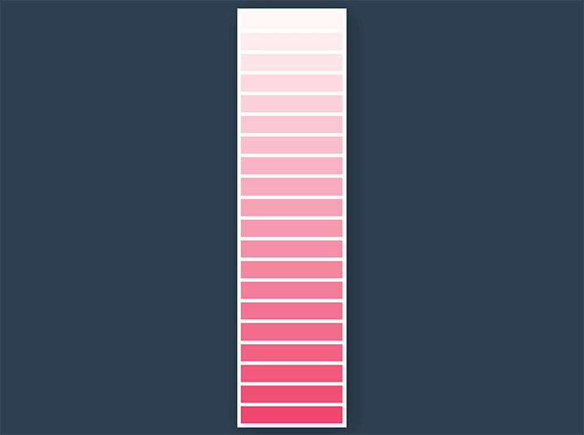

Dans le cadre de cet exercice, vous devez recréer la palette de couleur Pink Paradise afin de présenter les 20 tons de rose disponibles chez un fabricant de peinture. Pour ce faire vous aurez besoin d’une boucle Scss.
Aperçu du résultat 👇
Couleurs 🎨
| Pink Paradise |
|
.sample, créez-vous une boucle permettant de cibler chacun des 20 .sample de la palette.
À l'intérieur de cette boucle, remplacez la couleur de fond noire par Pink Paradise.
Réfléchissez à la façon de construire votre sélecteur CSS pour cibler dans la boucle chacun des div un par un (voir les notes de cours ci-bas pour vous aider).
Remplacez ensuite son alpha de sorte qu'il s'incrémente de 5% par itération de boucle. Autrement dit, les premiers .sample devraient avoir une opacité de 0.05, 0.10, 0.15 … jusqu'à 1.00.
Boucle SASS
Plusieurs classes CSS similaires avec une légère variation
Imbrication
Accélérer l'écriture de feuilles de styles
Pseudo-classes intermédiaires
first-child, last-child, only-child, nth